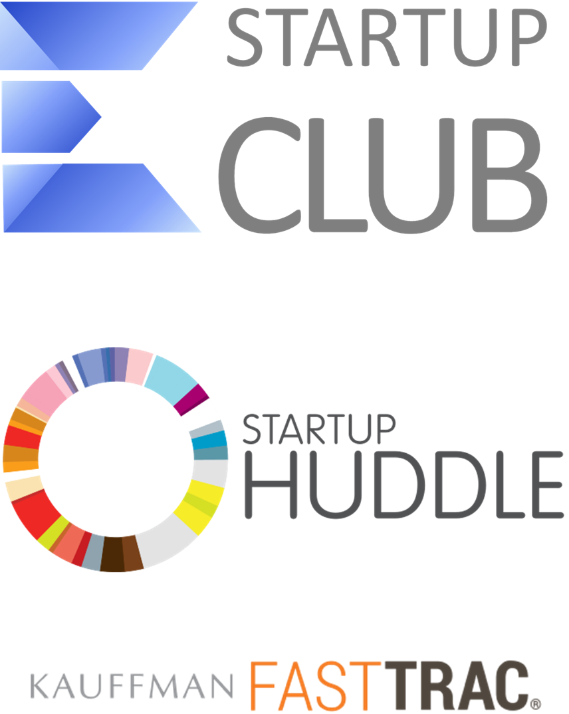

Center for Entrepreneurship Growth Programs
Transformative Programs for Entrepreneurs to Scale and Succeed
Since 2002, nesen has been implementing growth programs for entrepreneurs based on best practices from the world's leading accelerators and startup programs. The Center offers high-impact programs for existing entrepreneurs like the ScaleUp accelerator and various startup programs. These programs provide expert guidance, mentorship, resources, and networking opportunities to help businesses reach their full potential. The Center partners with Global Entrepreneurship Network and other key international entrepreneurship organizations. All programs include mentoring by experienced entrepreneurs. Regular sessions with experienced mentors offer valuable guidance, allowing participants to connect with like-minded individuals and forge new partnerships. The ScaleUp accelerator is a 9-month program designed for active entrepreneurs with high growth potential, featuring 10 interactive training sessions, at least 10 networking events, and 18 meetings with individually selected mentors. The key component of this program is mentorship.
Key Benefits and Partners
Participating in nesen's growth programs offers numerous benefits. Firstly, seasoned mentors provide invaluable guidance, helping mentees navigate the complex world of entrepreneurship. This support includes advice on business strategy, problem-solving, and decision-making. Secondly, mentors share their wealth of knowledge, aiding in skill development crucial for long-term success, such as leadership, financial management, and marketing. Moreover, mentors introduce mentees to their extensive professional networks, opening doors to potential partnerships, investors, and other opportunities. Additionally, regular mentor interactions boost confidence, foster personal growth, and encourage innovative problem-solving. The emotional support provided by mentors helps mentees stay motivated and resilient. The Center's partners, such as Junior Achievement and the Ewing Marion Kauffman Foundation, add credibility and support to these programs. Together, these elements contribute to the significant long-term growth and sustainability of participating businesses.
